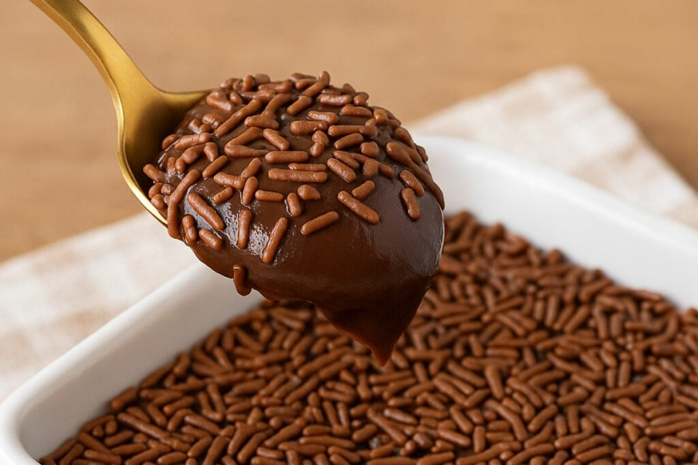

Sobremesas

Brigadeiro de Colher
Ingredientes:
- 1 lata de leite condensado
- 1 colher de manteiga
- 2 colheres de achocolatado
Modo de preparo:
Cozinhe tudo em fogo baixo, mexendo até engrossar. Sirva morno ou gelado.

Mousse de Maracujá
Ingredientes:
- 1 lata de leite condensado
- 1 caixinha de creme de leite
- 1 copo de suco de maracujá concentrado
Modo de preparo:
Bata tudo no liquidificador por 3 minutos. Leve à geladeira por pelo menos 2 horas antes de servir.